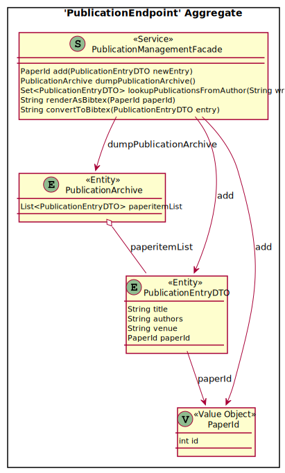
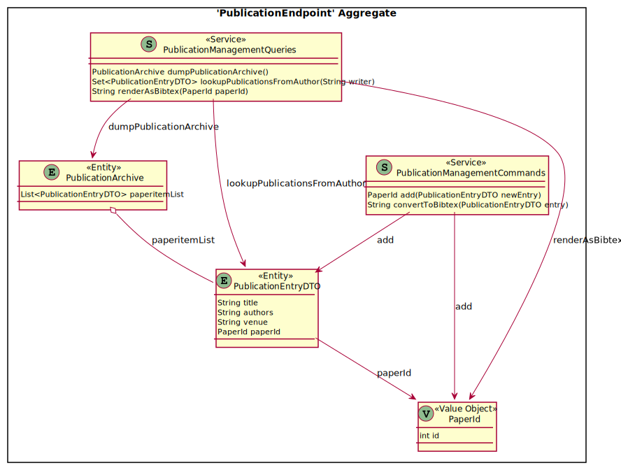

Move Operation
also known as: Relocate API Call, Balance Endpoint Responsibilities, Adjust Service Decomposition
Context and Motivation
One or more API endpoints (for instance, HTTP resources) have been developed, tested, and deployed. One endpoint contains multiple operations (for instance, HTTP PUT and POST methods). Not all of these operations work with the same domain concept(s) in the underlying API implementation; their responsibilities differ with regards to stakeholder groups and their concerns. Some operations are process-oriented activities while others have a data-oriented information management character; their quality characteristics including data protection needs may differ. As a consequence, the endpoint serves multiple roles in the API architecture and the operations have diverging responsibilities. There is a risk that they drift further apart during API evolution.
As the API provider, I want to focus and consolidate the operations of an endpoint on a single role and purpose so that API clients serving a particular stakeholder group understand the API design intuitively and the provider has a single reason to change each endpoint.
Stakeholder Concerns
- #maintainability and #understandability (a.k.a. explainability)
- There are many reasons to change an API (not just refactorings) [Stocker and Zimmermann 2021]. APIs should be changed as much as required and as little as possible, and ripple effects be avoided. One of the first steps in related maintenance tasks is to determine which parts of the system should be changed. An API whose endpoints have clearly separated concerns and distinguished roles helps developers to quickly understand the API.
- #scalability and #reliability
- When co-located in a single endpoint and deployed jointly, operations might influence each other. For instance, if one of these operations is long-running or causes a provider-internal error, its siblings might suffer from quality-of-service degradation too.
- #single-responsibility-principle and #independent-deployability
- Architectural principles such as single responsibility and independent deployability can guide the selection of refactoring. Some are affected positively, others negatively. The POINT principles for API design (purposeful, style-oriented, isolated, channel-neutral, and T-shaped) belong to this category; moving an operation to another endpoint can improve P, O, and I (but might harm T when looking at a single endpoint and not an entire API). Some principles might be style-defining (for instance, statelessness of interactions in REST), which makes it even more important to adhere and stick to them during design and evolution.
Initial Position Sketch
The following platform- and technology-independent API design, specified in MDSL, serves as the starting point for this refactoring:
endpoint type SourceEndpoint
exposes
operation operation1
expecting payload "RequestMessage1"
delivering payload "ResponseMessage1"
operation operation2
expecting payload "RequestMessage2"
delivering payload "ResponseMessage2"
endpoint type TargetEndpoint
// zero or more already existing operations
The refactoring targets are:
- A single API endpoint
- At least one of its operations (there should be more than one)
- An already existing second endpoint (creating a new one is described in Extract Operation)
Design Smells
- God endpoint
- One endpoint contains a large number of operations that do not serve related purposes.
- Role and/or responsibility diffusion
- The endpoint is both an Information Holder Resource and a Processing Resource. It is hard to explain what it does coherently. For instance, some of the exposed data lives long and changes rarely; other data goes through many create, update, delete operations in a short time span.
- Data lifetime mismatches
- Two operations in an endpoint deal with data that changes differently, both on the data definition and on the data manipulation level. For instance, one operation may expose master data and the other one may expose operational data. This causes undesired constraints on endpoint evolution.
- Too coarse-grained security or data privacy rules
- Some operations in an endpoint have more advanced quality requirements than others. For instance, some work with sensitive personal information that has to be protected, while others merely operate on public data. Other quality requirements mismatches might exist as well, for instance regarding availability and scalability.
- Endpoint implementation spaghetti
- There are several n to m relations between endpoints and implementation parts. At least one endpoint works with many implementation parts that evolve independently.
Instructions
- Remove the operation from the API Description or mark it as deprecated and soon to be retired.
- Refactor at the code level (for instance, Spring REST controllers when implementing the API in Java). Optionally, implement a new stub that merely redirects clients to the new endpoint operation (in HTTP, this can be achieved with URL redirection and status code
301). - Review the required and provided security policies including the access rights management (both in source and in target endpoint) and adjust as needed.
- Test whether the source and the target endpoint still meet their contracts (both functional and non-functional characteristics).
- Evaluate whether smells are removed (or at least some desired qualities have improved); record any remaining or new technical debt and identify additional follow-on refactorings.
- Add the operation to the target API Description.
- Inform all API clients about the completed change (in which version will it be introduced?) and provide migration information (or support the transition on a technical level, for instance with an HTTP redirect). Update all documentation accordingly.
Target Solution Sketch (Evolution Outline)
The following simple and abstract MDSL sketch shows the API design after the Move Operation steps have been performed:
endpoint type SourceEndpoint
exposes
operation operation1
expecting payload "RequestMessage1"
delivering payload "ResponseMessage1"
endpoint type TargetEndpoint
exposes
// already existing operations (if any) still there
operation operation2
expecting payload "RequestMessage2"
delivering payload "ResponseMessage2"
The sketch does not show any semantics or qualities that smell (see the following example for that).
Example(s)
In a publication management system (such as JabRef), the remote service layer exposing a Solution-Internal API for Frontend Integration within a Web application might look like this:

Example of Refactoring “Move Operation” (as is)
The single service endpoint PublicationManagementFacade in the above design might be refactored into the following API design:

Example of Refactoring “Move Operation” (to be)
There are two endpoints now, PublicationManagementCommands and PublicationManagementQueries. The add and convertToBibtex operations appear in the new command endpoint. The other three methods remain in the already existing endpoint, which was renamed to PublicationManagementQueries.
Hints and Pitfalls to Avoid
It is worth checking (before and after the refactoring) the following:
- Is the operation name still adequate in the new endpoint? If not, apply Rename Operation too.
- Is the technology mapping of the request and response messages still ok? For instance, the MIME types in RESTful HTTP as well as the platform-specific authentication and authorization settings might have to be changed because the target endpoint receives an additional (sub-)responsibility.
- Are new test cases and test data required in the target endpoint?
The effect of the new API design on the compatibility with the original one should be communicated. If needed, migration instructions and simple migration tools (such as scripts) may be provided.
Related Content
The refactoring Move Operation reverts itself. In code refactoring, Move Method [Fowler 2018] accomplishes a similar goal.
Consider Split Operation if the operation has several responsibilities and only some of them should be moved.
Rename Operation is related; so is Extract Operation.
The Design Practice Reference/Repository (DPR) Zimmermann and Stocker [2021] has a stepwise service design activity, which works with Candidate Endpoint Lists and Refined Endpoint Lists.
The API domain model that we refer to is introduced in Lübke et al. [2019].
References
Fowler, Martin. 2018. Refactoring: Improving the Design of Existing Code. 2nd ed. Addison-Wesley Signature Series (Fowler). Boston, MA: Addison-Wesley.
Lübke, Daniel, Olaf Zimmermann, Cesare Pautasso, Uwe Zdun, and Mirko Stocker. 2019. “Interface Evolution Patterns: Balancing Compatibility and Extensibility Across Service Life Cycles.” In Proceedings of the 24th European Conference on Pattern Languages of Programs. EuroPLop ’19. New York, NY, USA: Association for Computing Machinery. https://doi.org/10.1145/3361149.3361164.
Stocker, Mirko, and Olaf Zimmermann. 2021. “From Code Refactoring to API Refactoring: Agile Service Design and Evolution.” In Service-Oriented Computing, edited by Johanna Barzen, 174–93. Cham: Springer International Publishing. https://doi.org/10.1007/978-3-030-87568-8_11.
Zimmermann, Olaf, and Mirko Stocker. 2021. Design Practice Reference - Guides and Templates to Craft Quality Software in Style. LeanPub. https://leanpub.com/dpr.